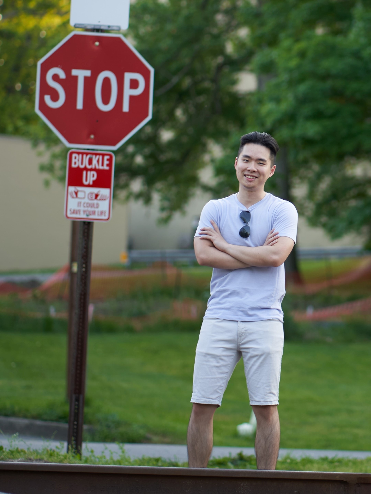

Engineered with a
Engineered with a
good pinch of Art.
Hi there, my name is Hongyu Wang. You can call me Howie.
I'm currently a Ph.D. student at the Human-Computer Interaction Institute
of Carnegie Mellon University. My current research interests are human-robot
interaction, interactive hardware, and digital design tools.
I build devices, make arts, and play some jazzy music.
I also picked up some random hobbies here and there - you'll also see me playing soccer and fixing up bikes.